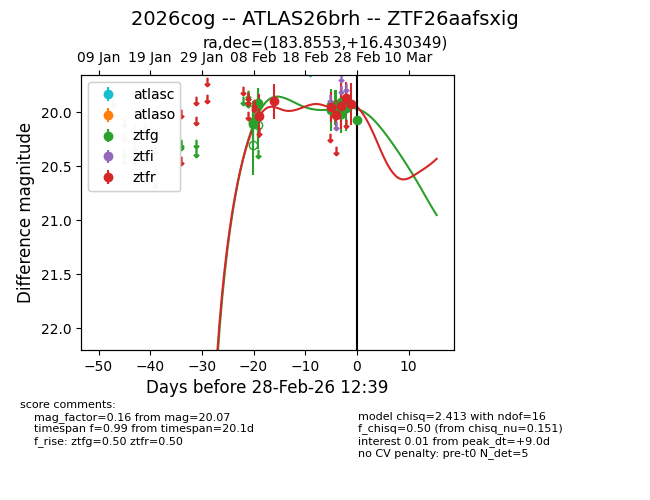
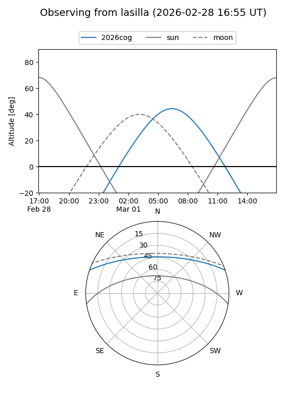
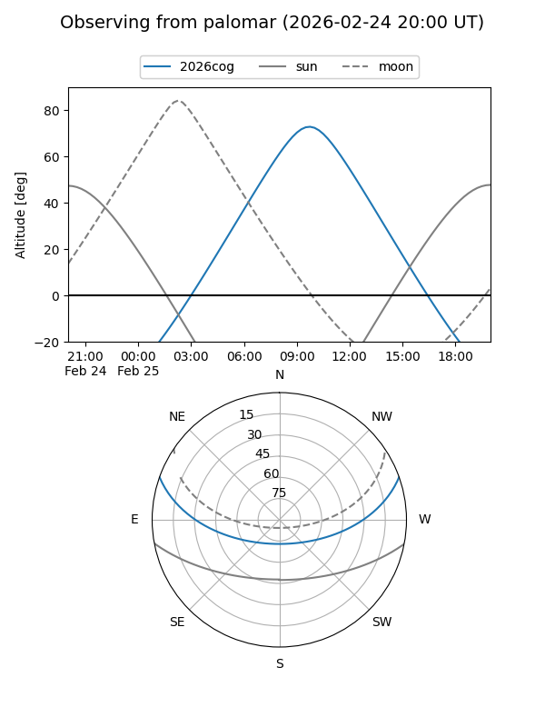
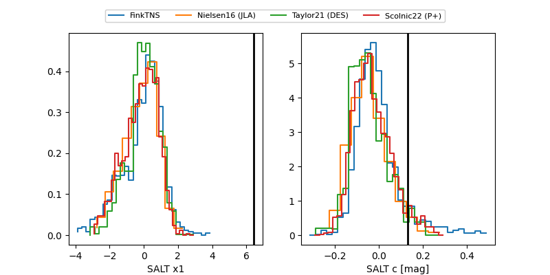

2026cog
Target 2026cog at 2026-02-28 12:41
Aliases and brokers:
FINK: link
Lasair: link
ALeRCE: link
TNS: link
YSE: link
alt names
ZTF26aafsxig (ztf,fink_ztf)
2026cog (tns,yse)
ATLAS26brh (atlas)
Coordinates:
equatorial (ra, dec) = 183.8553,+16.43035
equatorial (HMS+DMS) = 12:15:25.28,+16:25:49.26
galactic (l, b) = (263.1425,+76.43395)
Flags:
Photometry:
last ztfg=20.07, ztfr=19.92
11 ztfg, 7 ztfr detections
Lightcurve

Visibility


Additional plots
